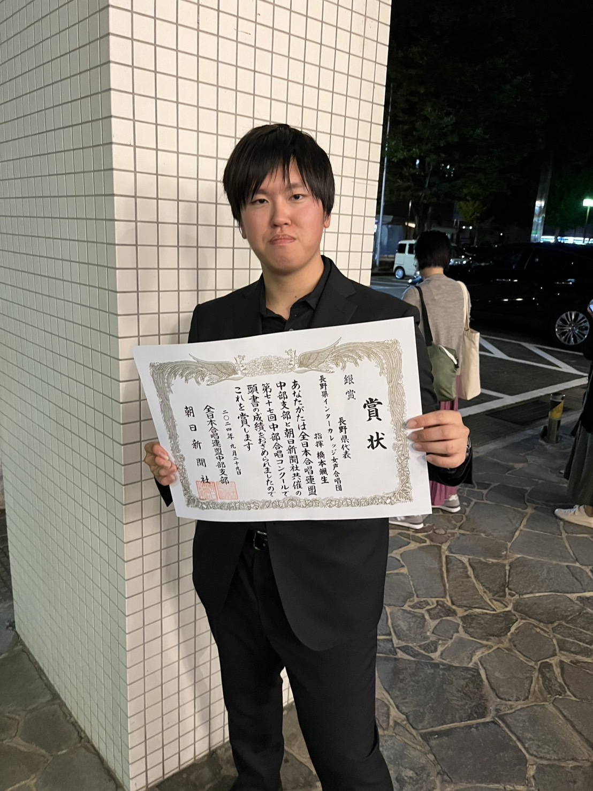

指導者プロフィール

橋本 颯生
Hashimoto Satsuki
現在、信州大学大学院に在籍しています。
高校生時代に合唱を始めました。高校では全日本合唱コンクール全国大会、NHK 全国学校音楽コンクール 全国コンクール、全国高等学校総合文化祭 合唱部門に出場経験があります。
東京の合唱団でも歌っています。
✨ 経歴・実績
2022年12月より現在まで、長野大学合唱サークルひびき にて常任指揮者を務める。
2023年にアンサンブルグループ dolce con espressivo を立ち上げ、長野県ヴォーカル･アンサンブルフェスティバルにてエメラルド賞（50団体中4位）を受賞。
2024年に長野県インターカレッジ女声合唱団を指揮者として設立。全日本合唱コンクール長野県大会にて金賞・長野県知事賞・長野市教育委員会賞を受賞し、中部支部大会で銀賞を受賞。また、同年度の長野県ヴォーカル･アンサンブルフェスティバルではダイヤモンド賞（62団体中1位）を受賞。
2025年に長野県合唱祭にて中信地区合同ステージを指揮。
2025年7月より、上田市立第六中学校合唱部にて外部指導者を務める。

河田 良子
Kawata Yoshiko
東京音楽大学器楽(ピアノ)科卒業。
音楽教師を退職後、ピアノ・ソルフェージュを教える。
2003年より再び講師として小・中・特別支援学校へ勤務。
現在、上田市立第六中学校合唱部外部指導講師、上田市少年少女合唱団指導部・指揮者。蓮沼勇一氏が主催する「夢現塾」に参加し研鑽を積む。上田自由塾「かわちゃんの歌の広場」「かわちゃんの合唱を楽しもう」講師。
✨ 経歴・実績
1988年信州国際音楽村児童合唱団結成時より、故村谷達也氏(当時 全日本合唱連盟常務理事)とともに10年間指導を担当。その間、指揮法並びに合唱全般について村谷達也氏に師事。
1991年、1992年全日本少年少女合唱祭にピアニストとして参加。
2009年より上田市少年少女合唱団指導部・指揮者として指導に携わる。
2016年オペラ「夕鶴」(演出 市川右近、主演 佐藤しのぶ)、2018年舞台「家族のはなし」(原作 鉄拳)、2019年オリンピックコンサート、第4回上田市民オペラ「魔笛」などの児童合唱の指導を担当。